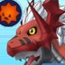
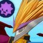
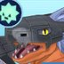
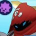

- 세대
- 완전체
- 종족
 백신
백신- 속성
 물
물- 소비 메모리
- 12
- 장비 슬롯
- 2
스테이터스 (Lv.99)
HP23202위/78
SP13755위/78
ATK17746위/78
INT17327위/78
DEF17734위/78
SPD14463위/78
막대 길이는 등록된 디지몬 중 최고값 대비 비율이에요. 순위는 스테이터스가 등록된 디지몬끼리 비교해요.
필살기 1
타이달 웨이브 물 SP 15
디지몬 속성과 같음
적 전체에 물속성 위력 75의 마법공격.
상성별 데미지 배율 상대 종족(세로) · 속성(가로)상대 속성(세로) · 종족(가로)
×3 이상×2 이상보통×1 미만
| 상대 ↓ / → | |||||||||
|---|---|---|---|---|---|---|---|---|---|
| 백신 | ×1.50 | ×1.00 | ×1.00 | ×1.00 | ×1.00 | ×1.00 | ×1.00 | ×1.00 | ×1.00 |
| 데이터 | ×0.75 | ×0.50 | ×0.50 | ×0.50 | ×0.50 | ×0.50 | ×0.50 | ×0.50 | ×0.50 |
| 바이러스 | ×3.00 | ×2.00 | ×2.00 | ×2.00 | ×2.00 | ×2.00 | ×2.00 | ×2.00 | ×2.00 |
| 프리 | ×1.50 | ×1.00 | ×1.00 | ×1.00 | ×1.00 | ×1.00 | ×1.00 | ×1.00 | ×1.00 |
| ×1.50 | ×0.75 | ×3.00 | ×1.50 | |
| ×1.00 | ×0.50 | ×2.00 | ×1.00 | |
| ×1.00 | ×0.50 | ×2.00 | ×1.00 | |
| ×1.00 | ×0.50 | ×2.00 | ×1.00 | |
| ×1.00 | ×0.50 | ×2.00 | ×1.00 | |
| ×1.00 | ×0.50 | ×2.00 | ×1.00 | |
| ×1.00 | ×0.50 | ×2.00 | ×1.00 | |
| ×1.00 | ×0.50 | ×2.00 | ×1.00 | |
| ×1.00 | ×0.50 | ×2.00 | ×1.00 |
배율 칸을 누르면 계산식이 여기에 나와요.
SS(서포트스킬)
오션 러브
매 턴, 최대 SP의 5%를 회복한다.
계승기 (레벨업 습득) 4
이 디지몬이 레벨업으로 배우는 스킬이에요. 배운 스킬은 진화·퇴화해도 계속 쓸 수 있어요.
| 습득 Lv | 스킬 | 속성 | SP |
|---|---|---|---|
| 15 | 오션 웨이브 I 적 전체에 물속성 위력 20의 마법공격. 명중률 95%. | 4 | |
| 25 | 엑스 힐 배틀멤버 1체의 HP를 회복한다. | 8 | |
| 35 | 하이드로 워터 III 적 1체에 물속성 위력 95의 마법공격. 명중률 95%. | 9 | |
| 45 | 아이스 아처리 III 적 1체에 물속성 위력 105의 물리공격. 명중률 95%. | 9 |
이 디지몬이 강한 상대 114펼쳐 보기
등록된 디지몬 중 필살기로 ×2 이상 데미지를 줄 수 있는 상대예요. 세대를 누르면 그 세대 목록이 보여요.
완전체 같은 세대 26 · 다른 세대 상대는 도감에서 볼 수 있어요.

메가로그라우몬×3.00
마타돌몬×2.00
메가드라몬×2.00
팬텀몬×2.00진화 전 디지몬 (퇴화 가능) 3
진화 트리 · 고래몬까지 오는 길 + 다음 진화
왼쪽부터 진화 순서예요. 고래몬 오른쪽(점선 칸)은 바로 다음 진화 1단계예요. 그 뒤가 궁금하면 그 디지몬을 눌러 따라가 보세요. 선은 출발하는 디지몬의 색을 따라가요. 디지몬을 한 번 누르면 거기서 고래몬까지 가는 경로만 남고, 한 번 더 누르면 그 디지몬 페이지로 이동해요. 회색 칸은 아직 정보가 없는 디지몬이에요.
유년기I
유년기II
성장기
성숙기
완전체
궁극체 ▸